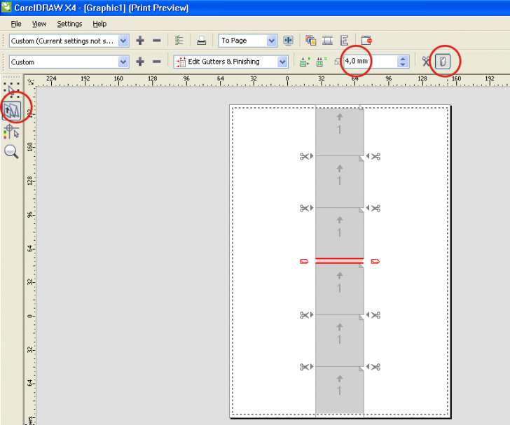
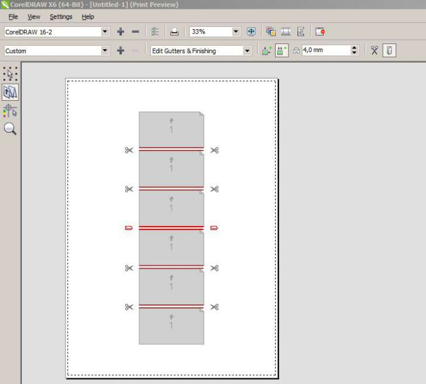
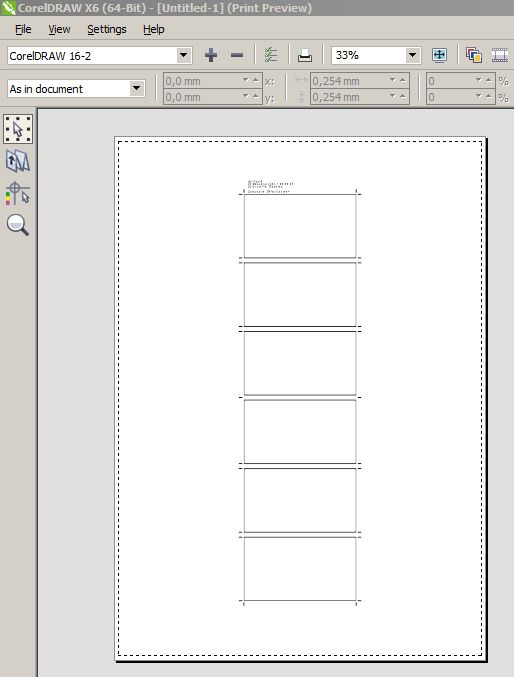

Печать из Coreldraw
Олеся / 21.02.2013, 14:38
Форум:
Всем привет. Столкнулась с такой проблемой при автоматической раскладкой в Корел, надо раздвинуть между билетами расстояние 4 мм, НО только в одном месте. (по середине) Раздвигает все по 4 мм. Как раздвинуть только по середине. (всего 6 билетов,раздвинуть соответственно после 3-го билета)
В том месте, где надо раздвинуть щёлкните курсором по пиктограмке в виде ножниц. Её вид изменится на сложенный лист (переплёт) и меняйте величину зазора там же, где раздвигали всё.

интересно :)
а в Х6 все равно раздвигается всё - только метка реза убирается


Уже нашла,но все равно огромное спасибо за ответ)))
О, Божечки мои! Если с первого наскока не вышло, зачем же сразу говорить, что не получается?
Потыркайте, пощёлкайте и так и сяк.
У меня нет Х6, но я полагаю, что так не должно быть, иначе зачем бы было делать две кнопки: с ножничками и с переплётиком?
Dastin, показанный тобой результат я тоже смог получить и в Х4.
Дело в том, что после того, как мы выбрали опцию Edit Gutters & Finishing, все линии реза сразу обозначились красным цветом, стали активными.
Щёлкните курсором на свободном поле, выделение красным исчезнет.
Далее всё как в #1
Я работаю в Х5, все гораздо проще надо щелкнуть еще раз зелененькую иконку(одинаковые переплеты) после появляется ОДНА красная линия,ставишь ее в любое место и раздвигаешь .
Solowejka,
чисто по вашей методе - кладу 6 на листе столбиком - тыркнул именно по ножничкам ( а не по линиям - этим я как раз регулярно пользуюсь)- ОДНА линия стала красной - ножнички заменились на согнутый лист - ввожу значение в окошке - Энтер - чувствуете все идет как надо :)
но раздвигается ВСЁ
проверено на Х6 х32/х64
Интересно что, чтобы снять выделение красным всех линий,
можно щелкнуть по любой из зелёных кнопок: "Auto Gutter Spacing" или "Equal Gutters".
dastin, ну если и это не поможет, тогда остаётся одно: рисовать в Х6, а печатать с Х4